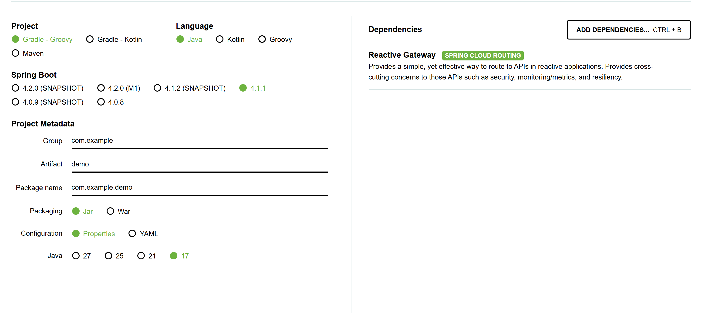
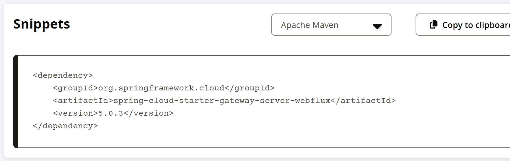
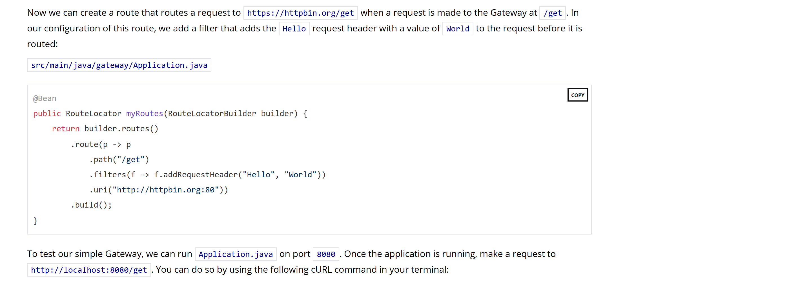

OSS PROJECT INTRO · SPRING CLOUD GATEWAY 系列第 2 期：5 分钟跑起来
上一期我们认识了 Spring Cloud Gateway——Spring 官方生态里的响应式网关，心智模型是"请求先到网关，路由匹配后转发给下游，过滤器顺手加工"。今天把认识变成动手。本期结束，你将亲手做出四样东西：一个跑起来的网关应用、一条配好的转发路由、一次 curl 验证通过的端到端转发、一个真正生效的请求头过滤器。全部命令与配置逐条对照官方文档与官方入门指南（2026-09-19 核对），跟着敲就能通；最后给一份"三条全绿才算跑通"的判定清单和五个高频翻车点的解法。
上期结论先回忆一句：网关的价值在"横切"——安全、限流、审计这些事，收口到一个入口统一做。今天验证它。本期端到端演示链五步走，每一环都有官方口径的预期结果：
/get 的请求，转发到官方指南指定的回显服务 httpbin.org；为什么下游选 httpbin.org？它是官方入门指南《Building a Gateway》指定的演示上游：你发什么请求，它原样回显什么——请求头、参数一目了然，过滤器加没加上，它替你作证。本期全程不需要装注册中心、数据库或任何中间件，5 分钟的口径才立得住。
环境要求两条：第一，JDK 17 及以上——Spring Boot 4.1 官方系统要求"at least Java 17"，最高兼容到 Java 26，本机装 17/21/25 都行；第二，构建工具 Maven 3.6.3+ 或 Gradle 8.14+（用 start.spring.io 生成的自带 wrapper 就不用管）。网关应用本身不依赖任何外部中间件，起起来就是一个普通 Java 进程。
版本钉子钉三条线（2026-09-19 核对）：Spring Cloud 版本列车 2025.1.x（代号 Oakwood），最新服务版本 2025.1.3；它对应的 Spring Cloud Gateway 是 5.0.3（当前 Latest，8 月发布，建议至少用这个版本——它带一个 SSRF 安全修复）；列车兼容的 Spring Boot 是 4.0.x / 4.1.x，start.spring.io 当前默认生成 4.1.1。三者的关系一句话：版本列车（BOM）管全局，Boot 定基础，Gateway 的具体版本由 BOM 解析，不用你手写版本号。
特别提醒：别拿老教程的配置直接套。4.x 时代的路由配置写在 spring.cloud.gateway.routes 下；5.0 起，响应式版的路由要写在 spring.cloud.gateway.server.webflux.routes——根路径多了一截。配置"看起来怎么写都不生效"的疑难杂症，九成是版本对不上，第 07 节有对照表。
打开 start.spring.io，Artifact 填 gateway，依赖搜索 gateway 后选 "Reactive Gateway"（分类标签 SPRING CLOUD ROUTING），点 Generate 下载 zip，解压即是完整工程。注意页面上有两个像的："Reactive Gateway" 对应 spring-cloud-starter-gateway-server-webflux——经典的 Spring Cloud Gateway 响应式版，官方指南和本期都选它；另一个 "Gateway" 是 Servlet 技术栈的 spring-cloud-starter-gateway-server-webmvc，两者别选混（第 07 节细说）。

start.spring.io：Spring Boot 4.1.1 为当前默认（快照版不用碰），Java 17 起步；右侧已添加 Reactive Gateway 依赖，描述原文"Provides a simple, yet effective way to route to APIs"（2026-09-19 截图）。不想用网页，也可以在 pom.xml 里直接加两个坐标（生成的工程就是这么来的）：
<parent>
<groupId>org.springframework.boot</groupId>
<artifactId>spring-boot-starter-parent</artifactId>
<version>4.1.1</version>
</parent>
<properties>
<java.version>17</java.version>
<spring-cloud.version>2025.1.3</spring-cloud.version>
</properties>
<dependencies>
<dependency>
<groupId>org.springframework.cloud</groupId>
<artifactId>spring-cloud-starter-gateway-server-webflux</artifactId>
</dependency>
</dependencies>注意 starter 这里不写版本号：由 spring-cloud-dependencies BOM（2025.1.3）统一解析——它解析出来的就是 Spring Cloud Gateway 5.0.3。这是 Maven Central 上该起步器 5.0.3 的坐标页，版本看得清清楚楚：

Maven Central 的 spring-cloud-starter-gateway-server-webflux 坐标片段：版本 5.0.3，由 BOM 托管（central.sonatype.com，2026-09-19 截图）。应用零代码，路由全在配置里。新建 src/main/resources/application.yml（start.spring.io 默认给的是 application.properties，改成 yml 或直接写 properties 都行），写入官方文档 5.0.3 属性结构的第一条路由：
spring:
cloud:
gateway:
server:
webflux:
routes:
- id: httpbin_route # 路由 id，随便起，别重复
uri: http://httpbin.org:80 # 下游地址：官方指南的回显服务
predicates:
- Path=/get # 路径匹配：/get 才走这条路由三个字段各管一件事：id 是这条路由的名字；uri 是转发目的地；predicates 是"什么请求算命中"。这正好是网关的三要素——第 3 期我们会给它们正式的名字：Route、Predicate、Filter。上面写法是官方文档的 shortcut 语法（Path=/get 短横线一行搞定）；官方入门指南同一章用 Java DSL 写的是同一件事，两种写法等价，挑顺手的：

官方入门指南《Building a Gateway》"Creating A Simple Route"一节原文：path("/get") 匹配、addRequestHeader 加过滤器、uri 指向 http://httpbin.org:80（spring.io/guides/gs/gateway，2026-09-19 截图）。指南用 Java DSL，与上面 yml 等价。工程根目录执行（IDE 里直接跑 GatewayApplication 主类也行）：
./mvnw spring-boot:run # Windows 用 mvnw.cmd spring-boot:run启动日志找这一行：Netty started on port 8080——注意是 Netty 不是 Tomcat。这就是上一期说的响应式底座在起作用：网关应用默认就是 Netty + WebFlux 栈，8080 是 Spring Boot 默认端口。起稳之后，对着网关发第一次请求：
$ curl http://localhost:8080/get{
"args": {},
"headers": {
"Accept": "*/*",
"Host": "httpbin.org",
...
},
"origin": "127.0.0.1, 73.68.251.70",
"url": "http://httpbin.org/get"
}读一下这段回显（节选自官方指南样例）："url": "http://httpbin.org/get" 说明请求真到了 httpbin.org，网关替你把请求转发出去了；回显里的 X-Forwarded-Host 等头还留着"经由 localhost:8080 中转"的痕迹。你敲的是本机 8080，响应却是下游给的——网关的第一课：它是透明反代，转发对客户端无感。
转发通了，再验证过滤器。按官方指南，给路由加一个 AddRequestHeader 过滤器——下游收到的请求会多一个 Hello: World 头。yml 写法在 routes 里加一段 filters（与 Java DSL 的 .filters(f -> f.addRequestHeader("Hello", "World")) 等价）：
filters:
- AddRequestHeader=Hello, World重启网关再 curl 一次，看回显的 headers 部分（官方指南样例原文）：
{
"headers": {
"Accept": "*/*",
"Forwarded": "proto=http;host=\"localhost:8080\";for=\"0:0:0:0:0:0:0:1:56207\"",
"Hello": "World",
"Host": "httpbin.org",
"X-Forwarded-Host": "localhost:8080"
}
}"Hello": "World" 出现了——官方指南原话："Note that HTTPBin shows that the Hello header with a value of World was sent in the request." 网关在转发前把请求改了，下游看得见。这就是过滤器的工作位置：请求发出前、响应返回后，网关都能加工。限流、改写路径、熔断，全是同一机制下几十个现成工厂中的三个，第 3 期展开。
跑通判定（三条全绿才算数）：
高频报错速查（按出现概率排序）：
| 现象 | 根源 | 解法 |
|---|---|---|
| 503 SERVICE_UNAVAILABLE | 路由 uri 不可达（下游没起/写错端口）；官方文档明确：lb:// 路由找不到实例时默认回 503 | 先 curl 下游地址本身确认活着，再核对网关 uri 端口 |
| 请求挂死、日志刷屏 | 路由 uri 指回了网关自己（如把 uri 写成本机 8080）——无限自转发，网关不会替你拦截这种配置 | 检查 routes 里 uri 是否指回网关端口，改掉 |
| 加了 spring-boot-starter-web 后网关不转发/起不来 | 官方文档原话：网关要求 Netty 运行时，"does not work in a traditional Servlet Container or when built as a WAR"——Servlet 栈与响应式栈互斥 | 去掉 spring-boot-starter-web 依赖，网关应用保持纯 WebFlux |
| 配置写了不生效 | 老教程根路径 spring.cloud.gateway.routes 在 5.0 的 Server WebFlux 版下不生效 | 换成 spring.cloud.gateway.server.webflux.routes（本文写法） |
| Port 8080 was already in use | 端口被占 | 配置 server.port 换端口，或停掉占用进程 |
排障第一手段（官方 Troubleshooting 页口径）：把日志调到 DEBUG，路由匹配、转发决策的全过程都会打出来；再深一层可开 wiretap 抓 Netty 收发的原始报文：
logging:
level:
org.springframework.cloud.gateway: DEBUG # 官方排障页推荐的 logger
# spring.cloud.gateway.httpserver.wiretap=true # 服务端抓包
# spring.cloud.gateway.httpclient.wiretap=true # 客户端抓包应用类只干了一件事：@SpringBootApplication 触发自动配置——starter 里带了一整套自动装配，把路由定位、Handler Mapping、过滤器链这些 Bean 建好，Netty 起在 8080。所以"网关应用"本质是一个被配置驱动的空壳。嵌入式也官方支持：文档明确 Server 形态"can be standalone or embedded in a Spring Boot application"，嵌进去时这个应用同时是网关和业务服务。但生产上通常不这么干——网关要横向扩、要独立发布节奏，跟业务绑死会把这层"横切收口"的意义削掉大半。嵌入式更适合内部小工具、原型期。
404 是网关自己回的：请求没命中任何路由的谓词，网关说"这不归我管"（判定三验证的就是它）。503 是命中了路由、但转发环节失败的信号——对 lb:// 路由，官方文档写明"找不到服务实例默认回 503"；对直连 uri，下游连不上同样到不了"拿到响应"那一步。这个区分是网关作为基础设施的分寸：404 告诉客户端"路径错了，别重试"；503 告诉调用方"下游暂时不行"——重试、熔断、降级策略都挂在后者的语义上。语义混了，重试策略就会踩空。
1. start.spring.io 上本期应该选哪个依赖？
2. Spring Cloud 2025.1.x 下，Gateway 响应式版的第一条路由应该写在哪条属性路径下？
3. 启动日志里"Netty started on port 8080"这个 Netty 说明了什么？
4. curl http://localhost:8080/other 返回 404，说明什么？
下期预告：第 3 期《核心概念与整体架构》——今天配置里 id、uri、predicates、filters 四个字段，正式的名字叫 Route、Predicate、Filter，它们怎么组成一条处理链、请求从 Netty 进来到转发出去经过哪几站，一期拆清楚。
Primary source：Spring Cloud Gateway 官方参考文档（5.0.3）——本期路由属性结构、AddRequestHeader 语法与排障日志开关均出自该文档（与所用版本匹配）；建应用与演示链出自官方入门指南 Building a Gateway（gs-gateway），版本兼容矩阵见 spring.io/projects/spring-cloud，版本发布见 GitHub Releases。